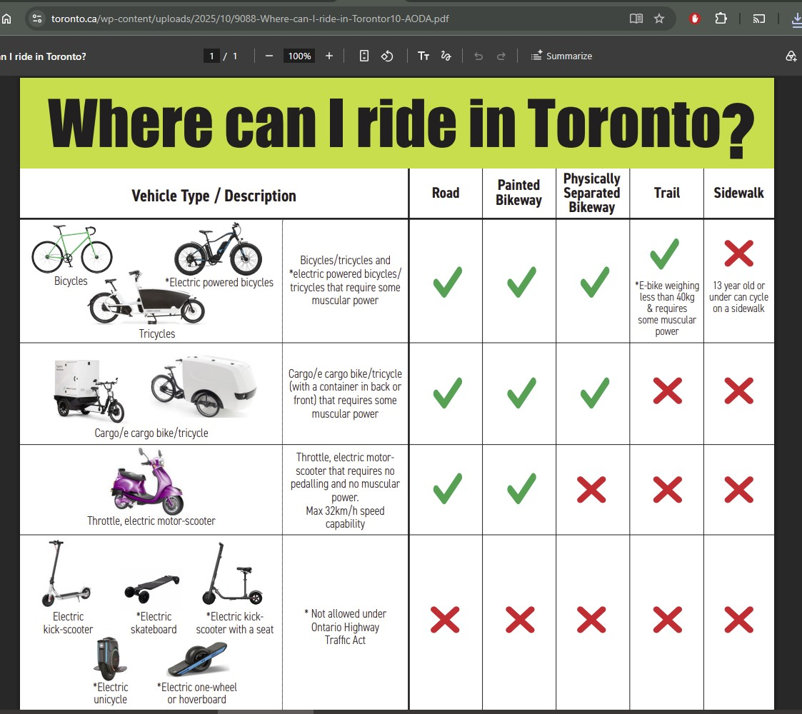

E-Bikes Regulations
** ONTARIO HAS NEW REGULATIONS NOV 2026
CLASS A & B
CLASS A & B
Class A are regular ebikes - can't be crazy heavy or have a throttle. Max speed for all is 32 km/h
Class B are *VERY* heavy (assuming to include large cargo bikes). Any e-bike with a throttle is class B
All the ebikes require lights, reflectors, hemets, dual brakes & riders over 16. (& of course pedals)
Note new requirement for 'exposed bicycle style frame'. This vague stipulation may actually be the simplest criteria for flagging wide, enclosed moped-style bikes that may have over-power motors, unusable pedals and non-safety certified batteries. (however there is sadly no listed Ont requirement re: battery certification)
The big issue I have here is with weight. Over 120 lbs? Even the largest cargo bike I would fall in or around class A; only a commercial-type delivery vehicle or illegal moped-style vehicle I would assume would go up the absurd 265 lb allowable limit. Show me a 150 lb ebike and I'll likely show you an ebike that should not be on teh road. (Rickshaws and Ice-Cream bikes exempted, of course)
Sample Cargo E-bike weights:
Urban Arrow - 48 kg
Riese & Müller - Load5 75 Vario - 85.6 lbs
Babboe 3-wheeled cargo bikes: estimated 65-75 kg
ALSO TM-B pedal-to-motor ebike - 37-41 kg (80-90 lbs)
IE Heaviest Electric Cargo bike here is approx 75 kg / 165 lbs - class B - but even the Urban Arrow is 48 kg / 105 lbs, well uder the CLASS A limit. So what are the recreational ebikes, apart from the dutch heavy Babboe, that requires the extra-heavy CLASS B category?
*** NOTE THIS EXAMPLE ***
EMMO Scooter-style Hornet HJ - 120 kg / 264 lb
https://emmo.ca/collections/electric-scooter-ebike/products/emmo-hornet-x
Amazingly it looks like the Ont regs are tailor made to allow the faux-moped Hornet to meet the absurd weight restriction of a CLASS B Ontario ebike
Weight could quite possibly be a great means of classifing legal and illegal e-bikes - justification is needed for the masive weight allowance of the Class B ebike
--- from City Toronto Site
--- Toronto Ferries and Toronto Island Park
--- Not all e-bikes are permitted on Toronto ferries or Toronto Island Park.
--- Conventional bicycles and e-bikes weighing less than 40 kg that require muscular power to operate
--- are permitted on ferries and on Toronto Island Park
ie The ferries wisely use a 40 kg / 88 lb limit - that will eliminate those dumb oversize moped faux-ebikes. So somebody has already figured it out.


New Ontario Regs 2026:
https://news.ontario.ca/en/backgrounder/1008324/ontario-strengthening-e-bike-regulations-to-protect-road-users
It looks like the province & not the city actually defines e-bikes, which could well explain the stupid weight limits allowed by the province but sensibly not allowed by Toronto Ferries
City of Toronto Guidelines:
https://www.toronto.ca/services-payments/streets-parking-transportation/transportation-projects/micromobility/electric-bicycles/
Bonkers chart still on City of Toronto Site specifically saying that non-pedal-able low speed electric mopeds are allowed in bike lanes! Sad.
https://news.ontario.ca/en/backgrounder/1008324/ontario-strengthening-e-bike-regulations-to-protect-road-users
It looks like the province & not the city actually defines e-bikes, which could well explain the stupid weight limits allowed by the province but sensibly not allowed by Toronto Ferries
City of Toronto Guidelines:
https://www.toronto.ca/services-payments/streets-parking-transportation/transportation-projects/micromobility/electric-bicycles/
Bonkers chart still on City of Toronto Site specifically saying that non-pedal-able low speed electric mopeds are allowed in bike lanes! Sad.


General International Regulations are Class 1, 2 & 3.
Go to bottom to see those
These A / B regulations look fine but:
- Do they clearly distinguish electric mopeds?
4 Criteria:
(1) max speed 32km/h, would require a measure road test. Hard to enforce
(2) max 500 Watt. Also hard to enforce without a sophisticated test
(3) Exposed bike frame. Nice try, but any piece of exposed frame could argue
(4) Pedal drive. That remains the best on-site viable test. Those crappy giant faux-ebikes that are really crappy unlicensed e-mopeds stick out like a sore thumb with their fat body styles and clearly nearuseless pedals.
From this point of view, the new regulations are better for (a) simpler speed regulation and (b) weight class definition to dintinguish heavy delivery bikes or heavy cargo bikes. But they are not better in that 'Usable Pedals' remains the only real designation to keep dumb electric mopeds out of the bike lanes. 'Exposed Frame' is a nice try for identifying wide moped-style vehicles, but how in the world is that actually assessed in the field?
Go to bottom to see those
These A / B regulations look fine but:
- Do they clearly distinguish electric mopeds?
4 Criteria:
(1) max speed 32km/h, would require a measure road test. Hard to enforce
(2) max 500 Watt. Also hard to enforce without a sophisticated test
(3) Exposed bike frame. Nice try, but any piece of exposed frame could argue
(4) Pedal drive. That remains the best on-site viable test. Those crappy giant faux-ebikes that are really crappy unlicensed e-mopeds stick out like a sore thumb with their fat body styles and clearly nearuseless pedals.
From this point of view, the new regulations are better for (a) simpler speed regulation and (b) weight class definition to dintinguish heavy delivery bikes or heavy cargo bikes. But they are not better in that 'Usable Pedals' remains the only real designation to keep dumb electric mopeds out of the bike lanes. 'Exposed Frame' is a nice try for identifying wide moped-style vehicles, but how in the world is that actually assessed in the field?
-------------------------------------------------------
What is required to improve:
*** I'm surprised there's nothing in the new regs about requireing a safety certified battery. That might actually be public danger #1 on bad e-bikes that should not be on the road ***
(PROPOSAL:)
Flag questionable bike. If a bike is flagged as questionable it has to be taken to a reporting center to be checked for legal viability. But how does this work. That's tough. This includes flagging bike for questionably safe (ie certified) battery.
[Stopped cyclists are already required to give name & address - that would have to be methodology for flagging - unless ebikers were required to have an email or phone number?]
So need:
(V1) VOLUNTARY flag - giving name & address & being requierd to submit bike for testing. Police can check system to see if a previous volentray flag has not been complied with. Officer takes photo of the bike for the flag record. Bike Flagged for voluntary submission cannot be ridden past the day of tagging (or subject to fine & impound). IE rider can keep riding bike that day to get home etc but cannot ride flagged bike in following days. If user is pulled over on subsequent day on teh road, officer has leeway to waive impoundment if it appears user is just riding bike to go for voluntary assesment.
(V2) INVOLUNTARY FLAG - bike is impounded for testing
Question remains: How to check if Moped?
ANSWER:
1-2-3 Field checklist:
(1) Pedal Check
Officer may do on-site pedal test requiring the user to pedal the bike with no power assist, or simply flag bad looking faux-pedal-bikes for Voluntary Assessment
(2) Frame Check
If the bike frame style suggests moped or motorcycle functionality (ie wide and/or enclosed), this could be a flag item. Officer has leeway, as enclosed bike parts may also indicate non-visible over-powered motors are non-certified batteries
(3) Label Check
Bikes that do not have labeled power output or battery certification may be flagged at officer descretion. This could include wheel size evaluation
*** I'm surprised there's nothing in the new regs about requireing a safety certified battery. That might actually be public danger #1 on bad e-bikes that should not be on the road ***
(PROPOSAL:)
Flag questionable bike. If a bike is flagged as questionable it has to be taken to a reporting center to be checked for legal viability. But how does this work. That's tough. This includes flagging bike for questionably safe (ie certified) battery.
[Stopped cyclists are already required to give name & address - that would have to be methodology for flagging - unless ebikers were required to have an email or phone number?]
So need:
(V1) VOLUNTARY flag - giving name & address & being requierd to submit bike for testing. Police can check system to see if a previous volentray flag has not been complied with. Officer takes photo of the bike for the flag record. Bike Flagged for voluntary submission cannot be ridden past the day of tagging (or subject to fine & impound). IE rider can keep riding bike that day to get home etc but cannot ride flagged bike in following days. If user is pulled over on subsequent day on teh road, officer has leeway to waive impoundment if it appears user is just riding bike to go for voluntary assesment.
(V2) INVOLUNTARY FLAG - bike is impounded for testing
Question remains: How to check if Moped?
ANSWER:
1-2-3 Field checklist:
(1) Pedal Check
Officer may do on-site pedal test requiring the user to pedal the bike with no power assist, or simply flag bad looking faux-pedal-bikes for Voluntary Assessment
(2) Frame Check
If the bike frame style suggests moped or motorcycle functionality (ie wide and/or enclosed), this could be a flag item. Officer has leeway, as enclosed bike parts may also indicate non-visible over-powered motors are non-certified batteries
(3) Label Check
Bikes that do not have labeled power output or battery certification may be flagged at officer descretion. This could include wheel size evaluation
-------------------------------------------------------
INTERNATIONAL CLASS 1 2 3
Class 1, 2, 3 etc are general (global) classifications
My notes here are for the 'Ontario versions' of Class 1, 2 & 3, used pre-2027
They are sensible - speed based
(starting 2027 Ont rules are more weight-based, with one speed limit)
CLASS 1 & 2 go reasonable speeds and are AOK on regular streets. Nobody cares if it's by pedal inference or throttle
CLASS 3 is just too fast
E-MOTO is obviously just an electric scooter/mototrcycle that people are trying to pass off as a bicycle to avoid licences, laws and insurance
My notes here are for the 'Ontario versions' of Class 1, 2 & 3, used pre-2027
They are sensible - speed based
(starting 2027 Ont rules are more weight-based, with one speed limit)
CLASS 1 & 2 go reasonable speeds and are AOK on regular streets. Nobody cares if it's by pedal inference or throttle
CLASS 3 is just too fast
E-MOTO is obviously just an electric scooter/mototrcycle that people are trying to pass off as a bicycle to avoid licences, laws and insurance